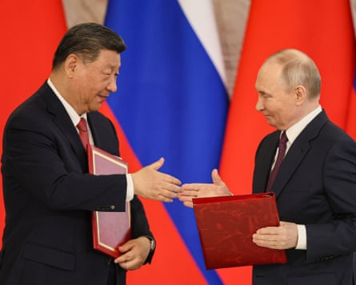

China is pulling every lever at its disposal to counter Donald Trump’s economic blockade, and it’s working.
Trade is recovering after the massive hit from Washington’s wide-ranging tariffs on Beijing’s exports.
According to data provider Macrobond and Beijing-based consultancy Gavekal Dragonomics, exports to the US were down by about $15bn (£11bn) in May, but up by half that figure to other countries that trade with the US. Exports to African countries have also risen sharply.
Meanwhile, Chinese officials are poised to strike deals to deepen economic cooperation with countries ranging from Brazil and South Africa to Australia and the UK.
The latest addition to China’s growing list of conquests occurred last week when its premier, Li Qiang, and Brazil’s beleaguered president, Luiz Inácio Lula da Silva, signed a slew of cooperation agreements , including ones covering artificial intelligence (AI) and aerospace, further consolidating Beijing’s Belt and Road scheme of tied investments .
It matters to everyone that China’s power and influence are expanding because the aims of its autocratic regime undermine the economic and political resources of the rest of the world.
China might, by some, be considered the great provider, but its pseudo-communist regime is a malign actor on the international stage, much as Russia has become, and its search for ways to thrive must be strictly circumscribed.
Without tough action, its voracious appetite for resources, information and intellectual capital will eat all of us.
There are spies in every major university syphoning information back to Beijing about new developments and business opportunities. When intellectual property and patents can be hacked, they are duly stolen. Digital information is harvested on a vast scale and put into huge databases, waiting for developments in AI to allow for a more systematic analysis by Chinese officials.
It might seem like a paranoid interpretation of China’s day-to-day workings when Britons cast their eye over their own government and believe it barely capable of boiling an egg. China, though, is a very different place.
Talk to local officials and you will quickly notice how concerned they are about the basics as much as they are about reasserting China’s preindustrial revolution status as the world’s greatest economic power.
How to feed 1.4 billion people is a daily task and a constant worry. Nothing must stop the effort to keep the wheels of today’s economy turning and the mission to usurp rivals such as the US and turn neighbours into supplicants.
The Chinese president, Xi Jinping, and the Russian president, Vladimir Putin (right). Beijing supplies Russia with much of what it needs in wartime in return for cheap oil.Photograph: Yuri Kochetkov/EPA
Australia’s prime minister, Anthony Albanese, knows this ahead of a trip to three Chinese cities this weekend for talks about trade and investment and the UK energy secretary, Ed Miliband, understands how carefully he must tread when considering injections of Chinese cash and knowhow to build new offshore windfarms.
What Beijing can offer is hugely attractive. It’s not just the 10% depreciation in its currency against the dollar that makes its exports even cheaper than they were just a few months ago.
It has cut-price digital infrastructure products that will transform an economy, an especially appealing offer to the industrialising nations also being punished by Trump’s tariffs such as South Africa, Brazil and the Philippines.
In the post-pandemic period of panic gripping much of the world, where the costs of making any kind of improvements are growing and government debts are escalating, China is one of the few big investors outside the Middle East with significant financial firepower.
Cheap goods offset inflationary pressures while tantalising investments lure countries that Beijing knows are struggling to deliver on election promises.
In this turbulent world, the UK, the EU and Australia can fend off China’s demands for greater access in return for investment – primarily access to digital information. They can use polite language when they say no. Or they can cite China’s alliance with Russia if they need a more forceful excuse.
Beijing supplies Russia with much of what it needs in wartime in return for cheap oil. In this way it has embraced pariah status.
Albanese says he will take back the port in Darwin from Chinese control. Likewise, Miliband should block Chinese investment in UK energy infrastructure. And David Lammy, the foreign secretary, should support planning objections to China’s proposed new embassy in London, which the MoD has warned will be a huge spying station.
Keeping China at bay when it has so much to offer won’t be easy. It pays the wages of university lecturers by sending tens of thousands of students to the UK. It sends us cheap electric cars and much else from its vast warehouse of electrical and electronic products.
That shouldn’t be an excuse for adopting a breezy, laissez-faire attitude. We might not have wanted to take sides. There is no issue with the people of Russia and China, but their governments have forced us to be more independent, and take the financial hit that comes with that.